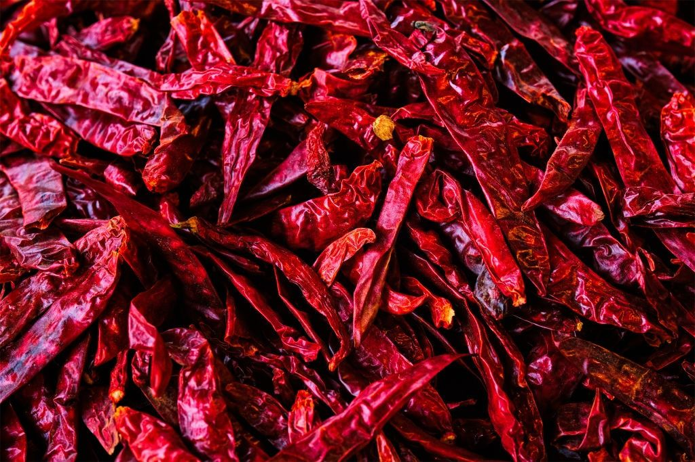
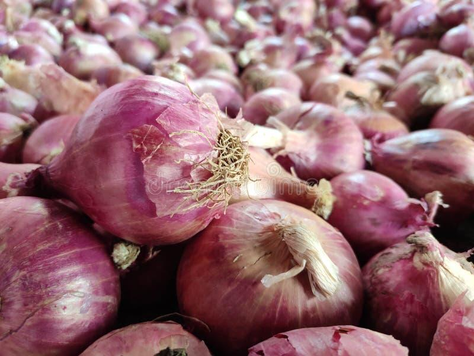
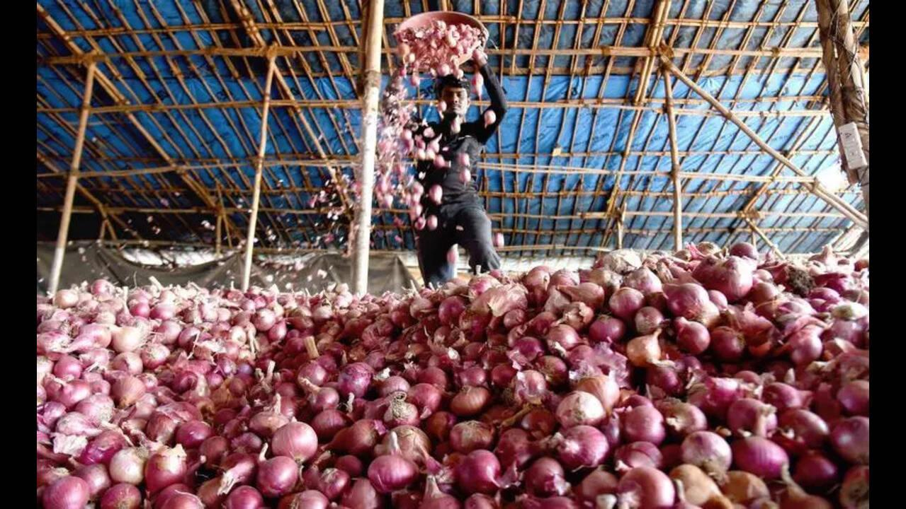
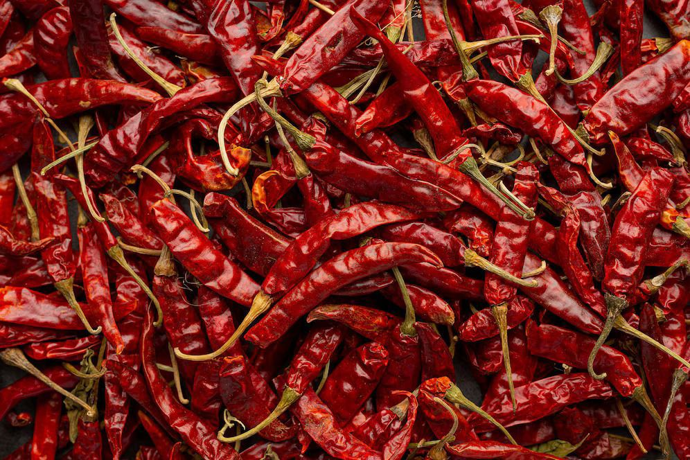

BNB ENTERPRISES
Loading...
Premium Indian red chillies from Guntur and export-grade onions from Nashik & Madhya Pradesh, supplied to Malaysia, Sri Lanka, and global markets.
BNB Enterprises is actively engaged in the export of agricultural commodities from India, supplying quality produce to international markets with a strong focus on grading, consistency, and reliable shipments. As part of a diversified trading group with three decades of family business heritage and established global trade relationships, we bring the same commitment to quality and reliability that defines all our operations to our agricultural commodity exports. Our key export products include red chillies and onions, sourced from well-known, established producing regions and packed as per buyer requirements for international markets.

We currently serve markets including Malaysia and Sri Lanka, and are actively expanding into new destinations backed by our established international trading network. Our agricultural commodity operations encompass careful sourcing from primary producing regions, rigorous quality inspection and grading, appropriate packing for export transport, and timely dispatch to meet market schedules and buyer requirements.

Our red chillies are sourced from Guntur, Andhra Pradesh — a region internationally recognized as one of the world's premier chilli production zones. Guntur chillies are known globally for their vibrant colour, intense heat, and distinctive flavour profiles, making them highly sought after by food processors, spice manufacturers, and culinary supply chains worldwide. We supply multiple popular and internationally traded varieties — Byadgi (Bayadgi), Teja, and 334 — based on customer preference, heat level requirement, and end-use application.
Byadgi chillies are prized for their deep red colour and moderate heat level, making them the preferred variety for colour extraction, paprika production, and premium food colouring applications. Teja chillies are known for their very high pungency and heat content, widely used in spice processing and hot sauce manufacturing. The 334 variety offers a balanced profile suitable for general spice blending and food processing.

BNB Enterprises exports onions sourced primarily from Nashik, Maharashtra — India's most prominent and internationally recognized onion growing region — as well as from Madhya Pradesh. Nashik onions are known worldwide for their consistent quality, excellent shelf life, uniform colour, and keeping properties that make them ideal for export markets. All onions are carefully graded by size and quality before dispatch to ensure uniformity and better shelf life.


Ans. BNB Enterprises exports three of India's most internationally traded red chilli varieties from Guntur, Andhra Pradesh: Byadgi (Bayadgi), Teja, and 334. Byadgi chillies are celebrated for their deep, vibrant red colour and moderate heat, making them ideal for paprika production, colour extraction, and premium food colouring applications. Teja chillies offer very high pungency levels and are widely used in spice processing, condiment manufacturing, and hot sauce production. The 334 variety provides a well-balanced heat and colour profile, suitable for spice blending and general food processing applications.
Ans. Guntur, Andhra Pradesh is internationally recognized as one of the world's most important red chilli production regions. The unique climate, soil conditions, and generations of chilli farming expertise in this region produce chillies with consistently superior colour intensity, heat levels, and flavour profiles. Guntur is home to Asia's largest chilli trading market, drawing buyers from across India and internationally.
Ans. We export onions sourced from Nashik, Maharashtra and Madhya Pradesh. Nashik onions are particularly prized for their excellent shelf life, uniform deep red or pink colour, and consistent quality. We supply onions in small, medium, and large sizes based on buyer requirements, packed in mesh bags, jute bags, or cartons as specified by the buyer.
Ans. BNB Enterprises currently exports red chillies and onions to Malaysia and Sri Lanka. These markets value the quality, consistency, and competitive pricing of Indian agricultural produce, and we have established reliable supply relationships in both destinations. We are actively looking to expand our agricultural export reach to additional markets in Southeast Asia, the Middle East, and beyond.
Ans. Quality assurance begins at sourcing — we select produce from established, reputable farms and mandis in the respective production regions. For red chillies, this includes careful selection for variety purity, colour uniformity, cleaning, sorting, moisture content control, and grade-specific packing. For onions, it includes visual quality inspection, size grading, removal of damaged or diseased stock, and appropriate packing for export transport.
Ans. We offer flexible packing options tailored to buyer specifications. Red chillies can be packed in standard gunny bags or polypropylene bags of varying weights. Onions are commonly packed in mesh bags (25 kg, 50 kg), jute bags, or cardboard cartons based on destination market requirements. All packing is done to ensure minimal product damage during transit and to comply with the import regulations of the destination country.
Ans. Our current primary agricultural export focus is on red chillies from Guntur and onions from Nashik and Madhya Pradesh. However, as part of a diversified global trading company with established international networks and commodity sourcing expertise, we are open to discussions on other Indian agricultural commodities based on buyer interest and market demand.
Ans. Contact BNB Enterprises at +91 9940191813 or email admin@bnbentglobal.com. Our office is at #75 Abdul Kalam Road, Nagalkeni, Chromepet, Chennai, Tamil Nadu 600075, India. Our team will discuss your commodity requirements, variety preferences, volume needs, packing requirements, and pricing.
For inquiries about our spice and agricultural commodity exports, contact us today: